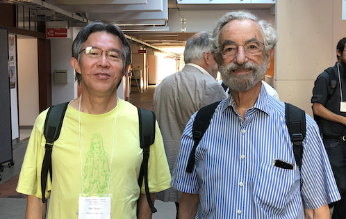

茶色の文字で書いてある部分は、相当に細かい仕事の話なので、ふつうの読者の方は読み飛ばしてください。
あけましておめでとうございます。 
昨年の夏には、ポスドク時代にお世話になったリーブ先生の 90 歳の誕生日を記念する国際会議に招待され、ボストンを訪れました。コロナ禍が始まって以来の初めての海外旅行、初めての対面の会議でした。国際会議そのものは素晴らしく、実に有意義でしたが、旅行の苦手な私にとってパンデミック下での出張はかなりの重荷になりました。
一方、オンラインでの活動にも大きな比重を置いています。国際数理物理学連合のオンラインセミナーの世話人を務め、友人と共催している統計物理学の国内研究会もオンラインで開催しています。面白がって始めた、YouTube で物理の講義を一般向けに配信する試みも細々と続けています。
世界を見渡すと暗澹たる気持ちになりますが、私たちは自分にできることをするしかないのでしょう。今年もどうかよろしくお願いいたします。
2023 年 1 月 1 日
田崎 晴明
せっかくの web 日記なので、ここに出てくるネット上での活動へのリンクを貼っておこう。
というわけで、今年は考え方を改めて、やるべきことを着々とこなしていくことを最優先しようと思います。ま、これもいつも言ってることのような気がしてきた。
けど、まあ、ただ言ってるだけではなく、大晦日も元旦も（紅白をちょっと見たり、初詣に行ったりとはかしたけれど）堅実に仕事を進めて有言実行しています。がんばりますので、今年もよろしく！